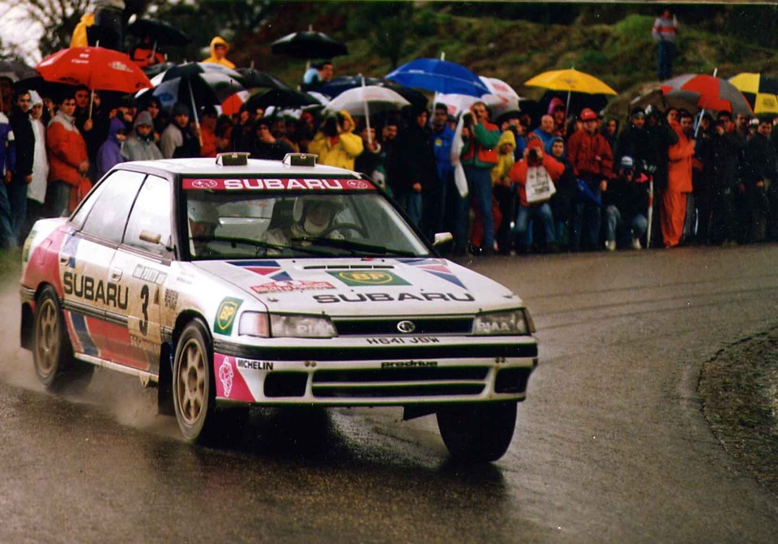

История дрифт! Само понятие и, в частности, техника дрифта появилась в Японии в начале 1980-х годов.
История же дрифта началась в конце 70-х годов в виде раллийных гонок,
тогда они были очень популярны,
а именно чемпионат мира по ралли (World Rally Championship, WRC).

Призовых мест на чемпионате команда Японии не занимала.
К примеру, на чемпионате мира по ралли среди производителей 1980 года
у команды был 7 и 15 места в итоговой таблице.
А в чемпионате мира среди пилотов японец
Йошио Ивашита занял только 42 место.
Как правило, Японские раллийные машины технически были хорошо подготовлены,
а автогонщики Канджиро Шинозука, Йошио Ивашита, Ёсинобу Такахаси,
Йасухиро Иуасе и Йаширо Ивасе умело управляли машинами и
гоняли по пересеченной местности, входили на скорости
в крутые повороты и умело скользили – дрифтовали.